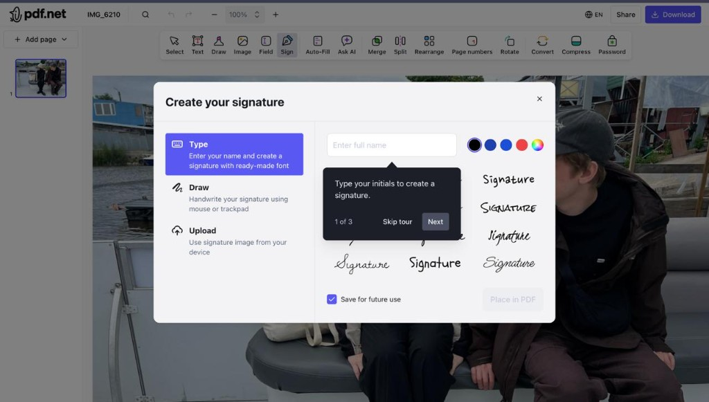
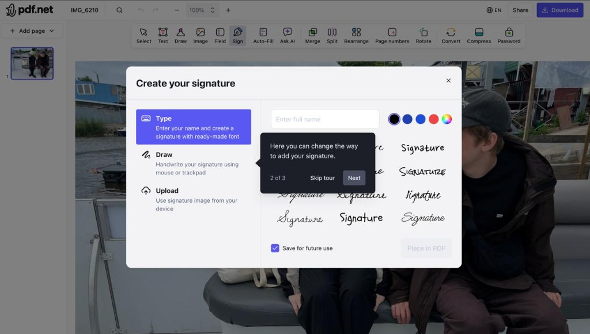
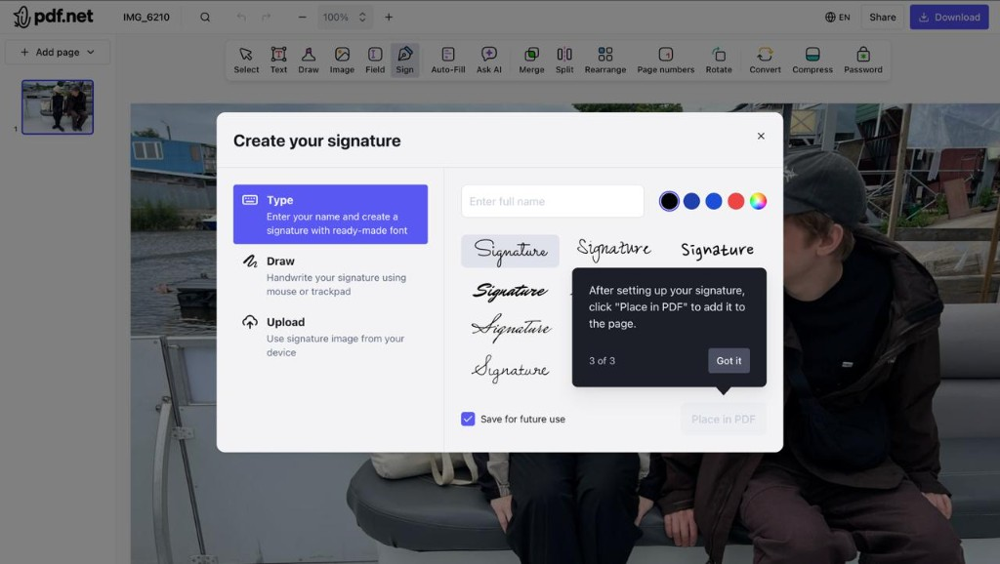
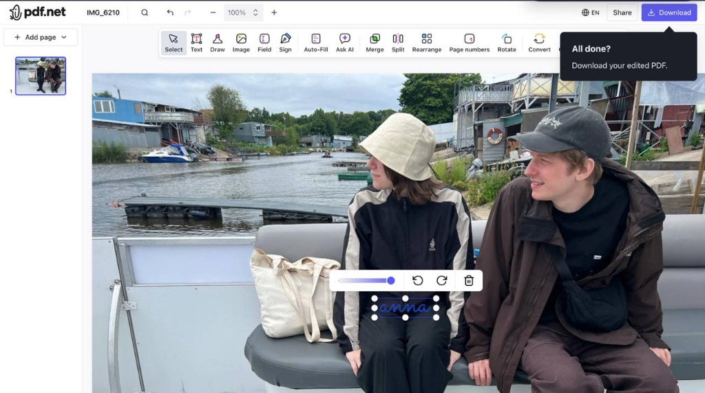

Onboarding audit: sign flow
I walked through pdf.net's sign onboarding (landing → editor → popovers → download) without analytics access. This is a heuristic audit from screenshots and one live session, not a conversion analysis.
Main finding
The tour is built for tour completion, not signature placed.
Evidence I can point to: step 3 highlights "Place in PDF" while the button is disabled (screenshot below). Step 1 has a "Next" button that does not require typing a name. The tour can finish without the user placing a signature.
I hypothesize this hurts activation, but I have not seen funnel data. The fixes below are small, testable, and scoped to onboarding behavior only (popover copy, step order, when hints appear).
What I observed
Sign flow, production UI.
Screenshots from production




| Observation | UX issue | Proposed fix | How to validate |
|---|---|---|---|
| Popover says "initials", field says "full name" | Inconsistent copy | Same wording in both places: "Enter your name" | No A/B needed. Ship as copy fix. |
| Step 3 spotlights disabled CTA | Instruction vs system state mismatch | Show step 2 only when "Place in PDF" is enabled | tour_step_2_viewed should correlate with place_clicked |
| "Next" on step 1 without typing | Tour progress ≠ user progress | Dismiss step 1 on input. No Next until field has text. | tour_completed vs signature_placed gap should shrink |
| Step 2 tours Draw / Upload tabs | Teaches alternatives before first success | Drop this step. Tabs stay; tour ignores them on first sign. | Optional A/B: 3-step vs 2-step tour |
| Download popover right after place | Completion prompt during edit state | Show after user clicks away from signature or stops interacting for ~10s | A/B: immediate vs delayed nudge on download_clicked |
"~10s without interaction" = user placed the signature and then did nothing (no clicks, no drags) for about ten seconds. Exact timing should come from session replay, not from this audit.
Proposed tour (same modal)
Keep "Create your signature" as-is. Change the tour only.
Today
Proposed
Create your signature
Download hint: wait until editing is done
After placing a signature, the product shows "All done? Download" while the signature is still selected (resize handles visible). That reads like "you're finished" when the UI still says "you're editing."
Proposed trigger (either condition is enough):
- User clicks outside the signature (deselects it), or
- User does nothing for ~10 seconds after placing (no clicks, no drags)
Copy: "Download your signed file · contract.pdf" instead of "All done?"
What I would instrument first
I do not know which issue is largest without data. These events would tell us where to start:
| Event / ratio | Question it answers |
|---|---|
tour_completed → signature_placed |
Is the tour lying about success? |
sign_modal_opened → signature_placed |
Overall modal onboarding drop-off |
tour_step_3_viewed where CTA disabled |
How often users hit the dead-end step (should be zero after fix) |
signature_placed → download_clicked |
Does delayed Download hint help or hurt? |
Suggested test order: (1) copy fix, (2) never spotlight disabled CTA, (3) drop tabs tour step. Download timing is a separate A/B once modal tour is fixed.